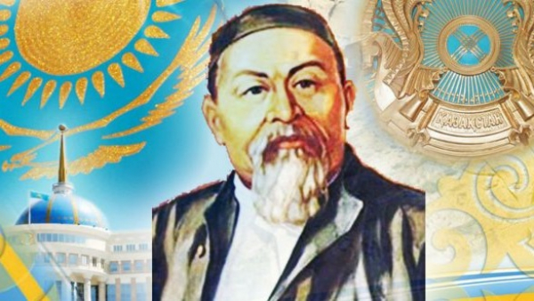

Кажгалиева Ажар Мұратқызы
Интерактивті диктанттар
Электронды оқу құралы

Абай Құнанбай ұлы. Қара сөздер.
Mазмұны
Пікір жазған:
Ә.С.Нұржанова – филология ғылымдарының кандидаты, доцент, С.Сейфуллин атындағы Қазақ агротехникалық университеті.
Интерактивті диктанттар (Электронды оқу құралы). – Нұр-Сұлтан: 2022.
Құрастырушы: А.М.Кажгалиева - PhD, С.Сейфуллин атындағы Қазақ агротехникалық университеті.